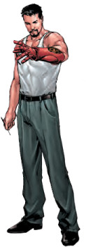
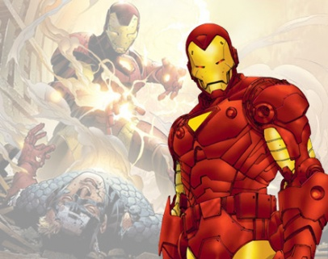

Tony Stark, o Homem de Ferro, é um cientista e empresário genial, bilionário, playboy e filantropo. Entra no MIT com 15 anos para a graduação em Engenharia elétrica e com 19 anos recebe o título de Doutorado em Física. Nunca faltou dinheiro para seu projetos, pois herdou a fortuna e os empreendimentos de seu pai aos 21 anos, quando este faleceu em um acidente. Dada a sua juventude, criou para si um estilo playboy bilionário. Essas características foram inspiradas no milionário americano da vida real, Howard Hughes.[2] [3]
Na versão original, durante a guerra do Vietnã, o inventor e empresário Tony Stark foi vítima de uma explosão de granada. Stark sobreviveu à explosão mas estilhaços do explosivo se alojaram próximo ao seu coração, ameaçando sua vida. Ele foi capturado e levado até o líder Wong Chu. Restavam apenas alguns dias de vida para o americano, e Wong Chu o forçou a criar uma poderosa arma.Tony não criou uma arma e sim algo que o mantivesse vivo e permitisse derrotar os captores. Preso com ele estava outro gênio, o professor Ho Yinsen. Stark revelou seu plano ao professor e Yinsen o ajudou.
Quando os homens de Wong Chu se aproximaram, o velho professor pegou uma metralhadora, mas acabou sendo fuzilado, mas garantiu tempo suficiente para que Stark se recuperasse e se acostumasse a usar a armadura criada.
O Homem de Ferro enfrentou os soldados e os derrotou. Sua armadura resistia aos disparos contra ele. Wong Chu tentou fugir e o Homem de Ferro incendiou o galpão de munições fazendo com que a explosão o matasse. Os prisioneiros foram libertados.
Desde então Stark desenvolveu novas versões de sua armadura e adotou as cores vermelho e dourado como as padrões da armadura, com algumas pequenas alterações esporádicas como preto, prateado e, mais recentemente, branco.
No começo de suas atuações, e para que ninguém desconfiasse, Stark espalhou o boato de que o Homem de Ferro era seu guarda-costas. Nas aventuras dos anos 70 e 80, era comum heróis, vilões e coadjuvantes do Universo Marvel se referirem ao Homem de Ferro como "o lacaio de armadura". Apenas seu motorista, Harold "Happy" Hogan, e sua secretária, Virginia "Pepper" Potts, sabiam da identidade secreta de Stark.
Ainda na versão original, Tony Stark colaborava com as forças armadas americanas, desenvolvendo armas e máquinas com o objetivo de usá-las na Guerra Fria. Seus inimigos frequentes eram os comunistas (russos, asiáticos ou latino americanos: pessoas que defendiam o comunismo/socialismo). Enfrentavam o Homem de Ferro rivais tecnológicos como o Dínamo Vermelho (ou Escarlate) e o primeiro Homem de Titânio. Ou espiões especiais como a Viúva Negra e o Espião Mestre.
Topo